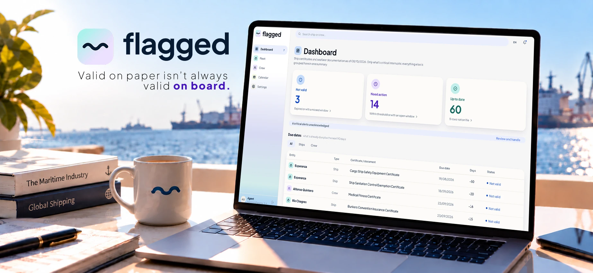
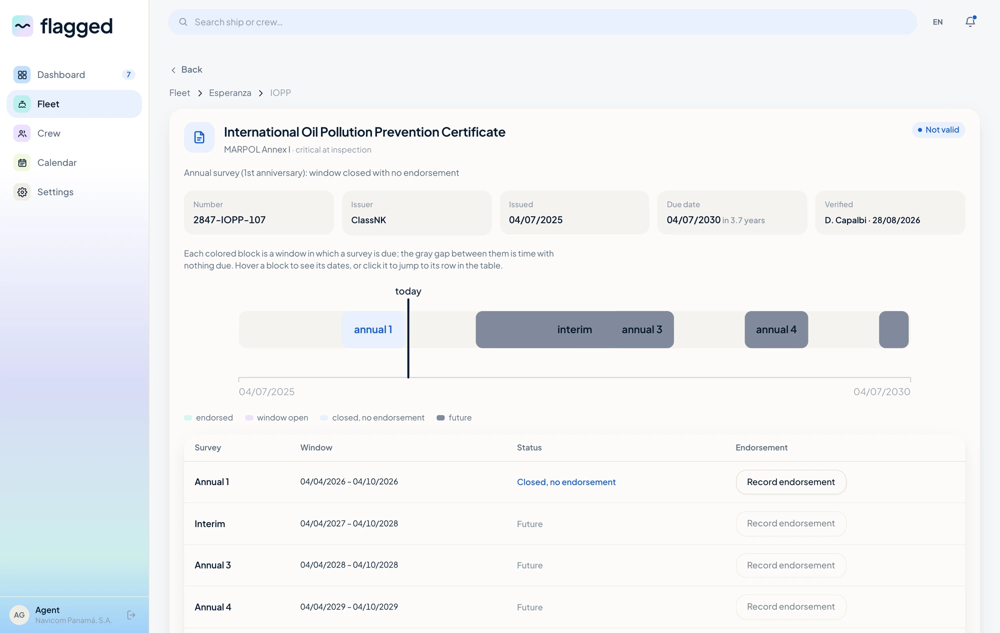
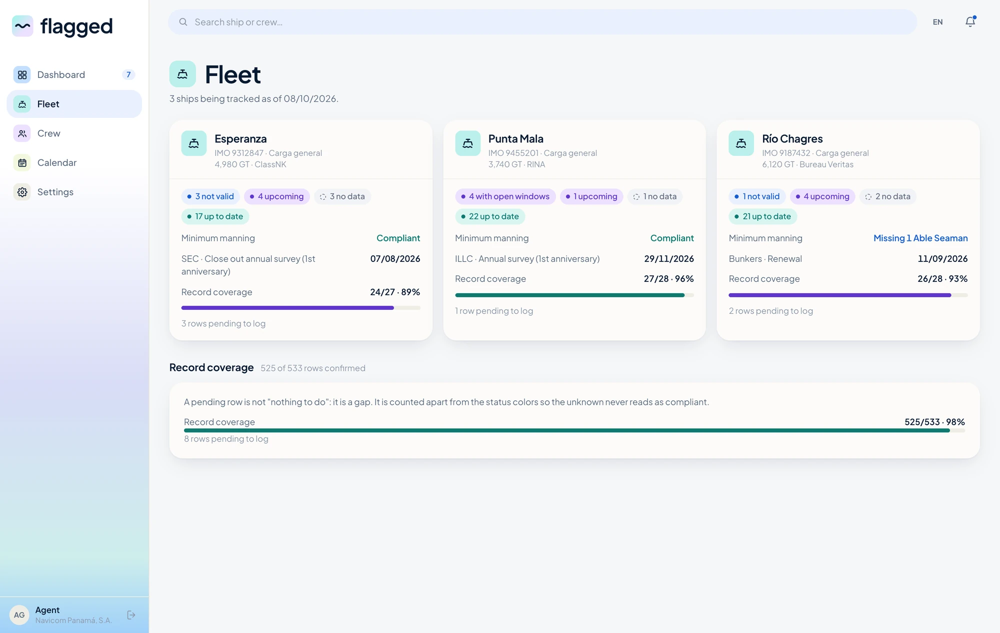
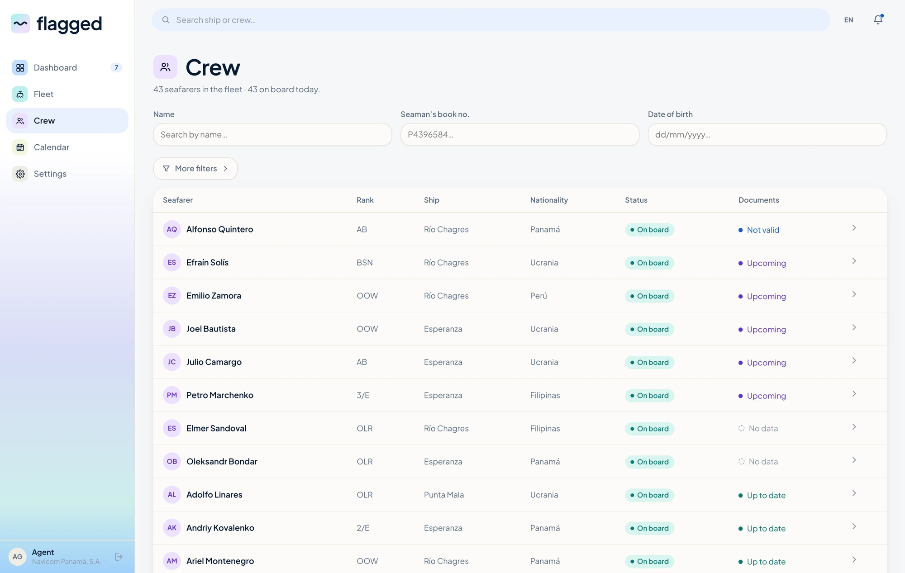
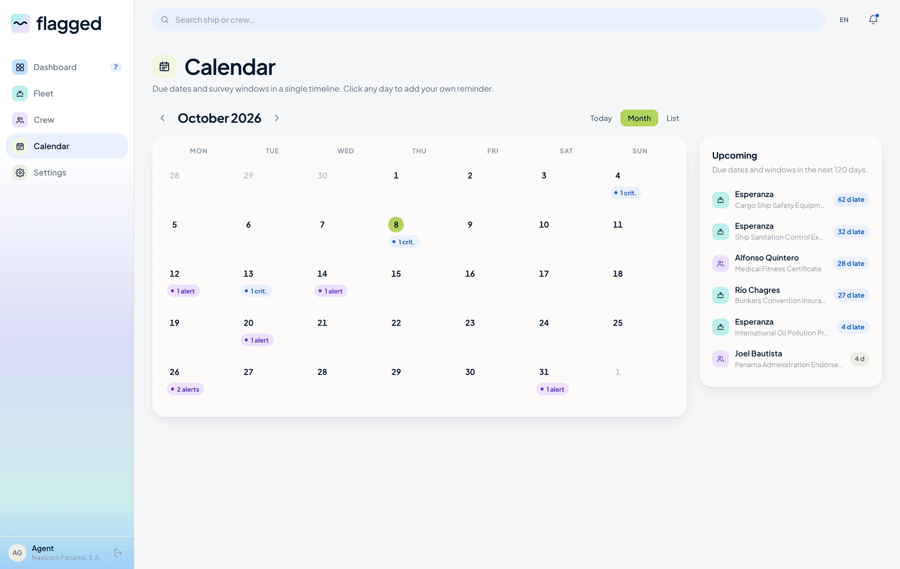
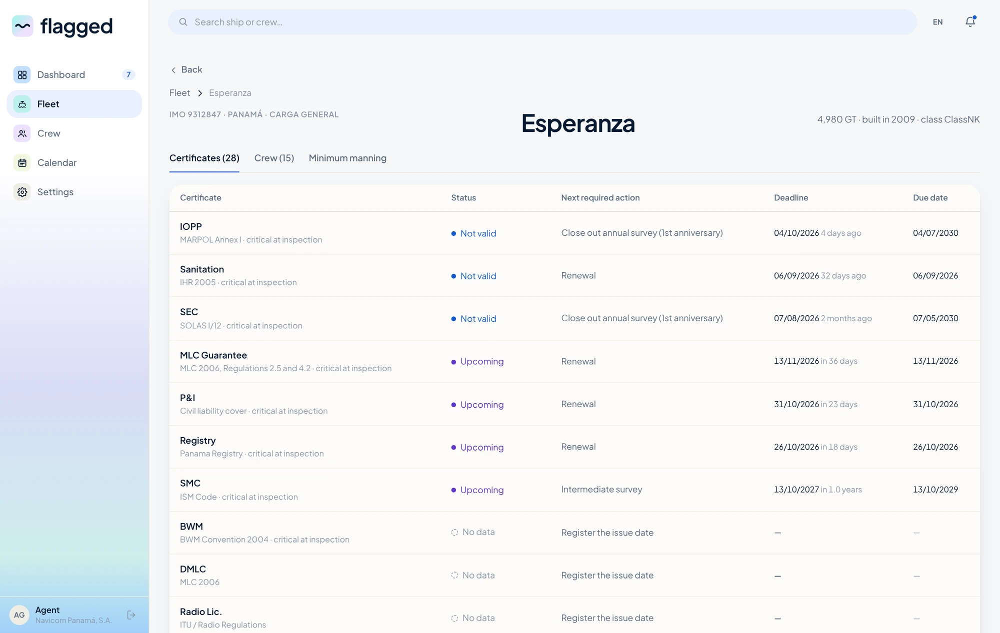
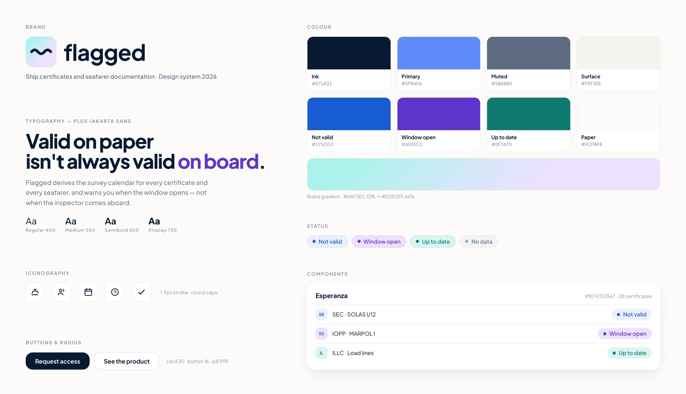
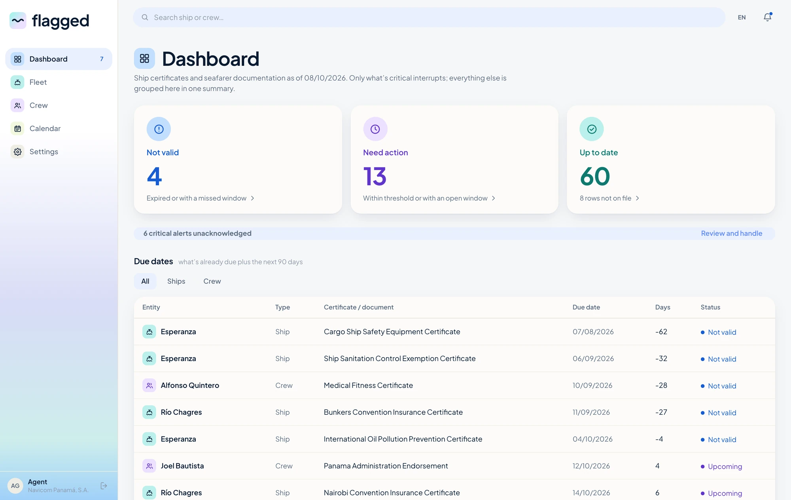

Flagged
Making maritime documentation easier to understand, before it becomes a problem.

Flagged is a digital product designed to help maritime teams stay ahead of vessel certificates and crew documentation.
It was born from my eight years at the Consulate of Panama in London, where I worked closely with maritime companies, crew documentation and certification processes. After seeing first-hand how much of that work depended on manual checks and fragmented information, I wanted to explore how a digital product could make the process proactive.
Instead of discovering a documentation problem when it becomes urgent, Flagged helps teams see it coming.
The problem
A certificate can be valid on paper and still require attention.
During my years working with maritime documentation, I saw how much of the process relied on spreadsheets, emails, shared folders and manual checks. A simple expiry date doesn't always tell the full story: depending on the document, its convention, class requirements, survey window or possible extensions, the actual situation can be far more nuanced.
When you're managing documentation across vessels and crew, discovering an issue too late means urgent renewals, operational disruption and unnecessary cost.
The problem wasn't simply keeping documents somewhere. It was knowing what those documents actually meant, and what needed to happen next.

From experience to product
I spent the last eight years at the Consulate of Panama in London, where I coordinated the Crew Department and worked closely with the maritime industry. My role involved managing crew documentation, processing certificates and endorsements, communicating with international shipping companies and helping clients navigate complex regulatory requirements.
With a background in graphic and digital design, I naturally started looking at these processes not only from an operational perspective, but from the perspective of how information is organised, communicated and understood.
The difficult part was never simply knowing when a certificate expired. After completing my UX/UI training I decided to bring the two sides of my experience together, and the question that started the project was this:
What if maritime teams could know what needs attention before it becomes a problem?
The challenge
The goal wasn't another generic document management platform. The challenge was more specific:
How might we help maritime teams understand what needs attention before a certificate becomes a problem?
That meant moving away from a system that stores documents and dates, towards one that helps users understand, prioritise and act.
Defining the MVP
A maritime documentation platform could manage a great many things. For the MVP I wanted one clear problem: avoiding surprises. That gave three core needs.
- 01 See what's coming An early warning when certificates or licences approach an important deadline.
- 02 Know what to do Turn each upcoming renewal into a clear next step, rather than leaving users to work it out themselves.
- 03 See everything in one place Vessels, crew and documentation in a single overview.
Information architecture
The product is structured around three areas, kept deliberately shallow so a user can move from a high-level overview to the one document that needs attention without getting lost on the way.



Designing the status system
The most important design decision was moving away from a simple expiry-date system. A certificate isn't just valid or expired: its status depends on survey windows, conventions, class requirements and extensions.
Rather than asking users to interpret all of those dates themselves, Flagged translates the underlying information into three statuses you can act on.
- Not valid
- The certificate or documentation is no longer valid and requires attention.
- Window open
- The relevant survey or renewal window is open and action can be taken now.
- Up to date
- Nothing currently requires attention.
This makes the dashboard less about reading information and more about understanding what to do next. It is also why the interface separates what is actually wrong from what is simply missing — a row nobody has filled in yet is a gap, not a pass, and the two are not the same problem.

From data to interface
The interface was designed around one principle: show the important information first. A maritime administrator shouldn't have to open several documents, or compare spreadsheets, just to learn whether a vessel needs attention.
So the Fleet view leads with vessel status, certificate status, upcoming actions, relevant deadlines and missing information — in that order. The visual language is deliberately restrained, carrying the weight in hierarchy and status rather than in decoration. The aim was to make a complex system feel clear without making it simplistic.
The first interaction with the product should answer one question: is there anything I need to worry about?
Plus Jakarta Sans throughout, tight tracking on the headlines, generous radii, and a palette that spends its only strong colours on the three statuses. Red, amber and green are held back for real errors and destructive actions — a certificate's state is never a traffic light, because a traffic light cannot say “the window is open and you can act now”.

The calendar changes the order of events
Putting documentation on a timeline turns the whole workflow around. Instead of meeting deadlines one document at a time, you see them in relation to each other.
See → Understand → Prepare → Renew
rather than Expire → Discover → React
The final product
Flagged brings fleet management, crew documentation and time-sensitive certification into one interface. The MVP focuses on making complex maritime requirements easier to understand without removing the complexity that actually matters.
It doesn't try to hide the rules. It translates them into information people can act on.

What I learned
The biggest challenge wasn't creating the interface. It was understanding the system behind it.
Maritime documentation is full of rules, exceptions, dates and dependencies. A good interface can't just make that information look cleaner — it has to make the underlying logic understandable.
Having worked on both sides, design and maritime administration, I wasn't only thinking about how the product should look, but about the processes, constraints and people behind it. It reinforced something I've learned throughout my career: good design starts with understanding how things actually work.
The outcome
Flagged started with a simple question: what if you could know about a documentation problem before it became one? The result is an MVP with one clear goal — making the status of maritime documentation visible before it becomes urgent.
Flagged is mine end to end — the research, the domain model, the product decisions, the interface and the front end. See it live.
Let's connect.
Currently based in Barcelona — available for remote work
dario.capalbi@gmail.com